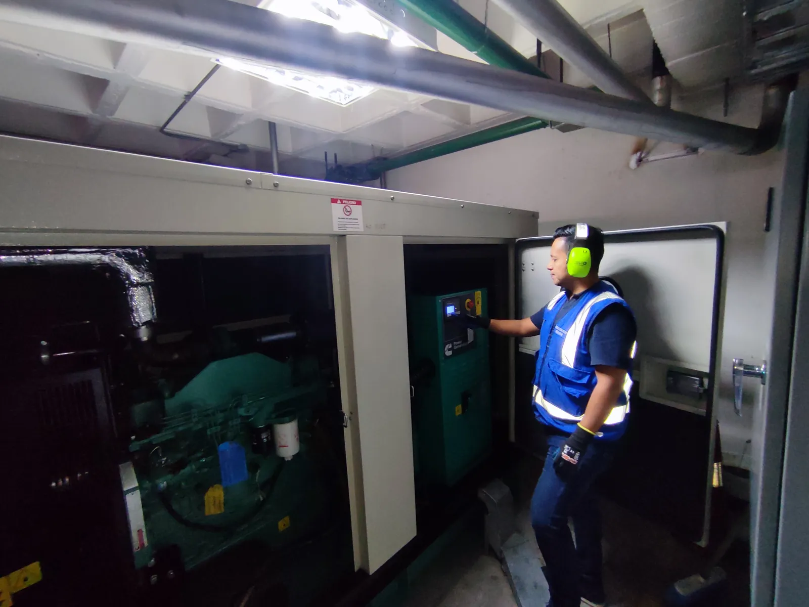
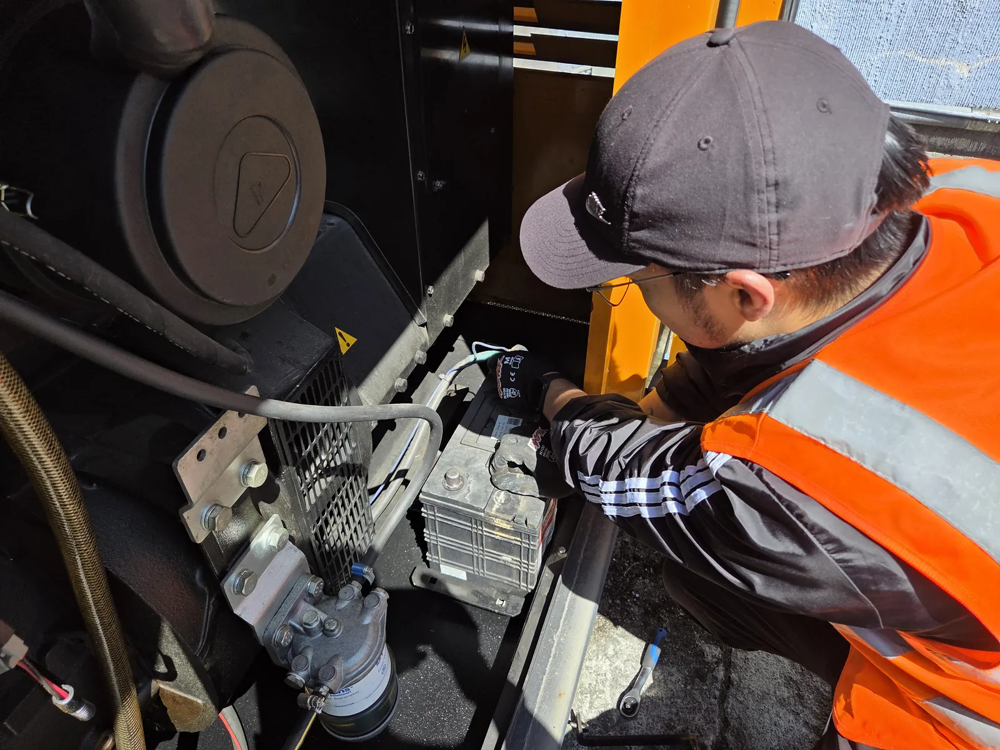
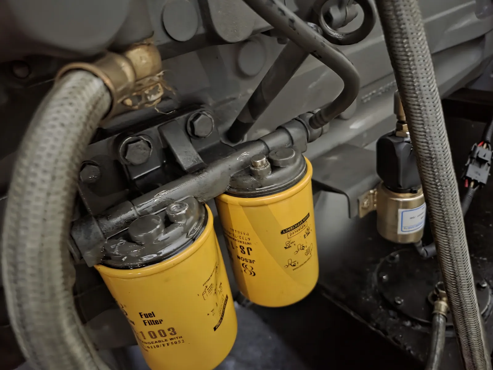
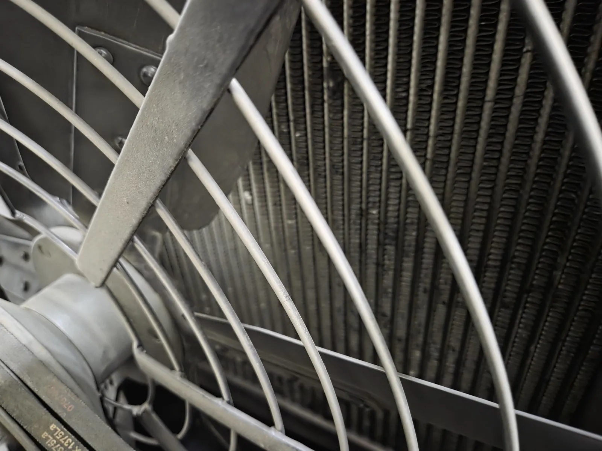
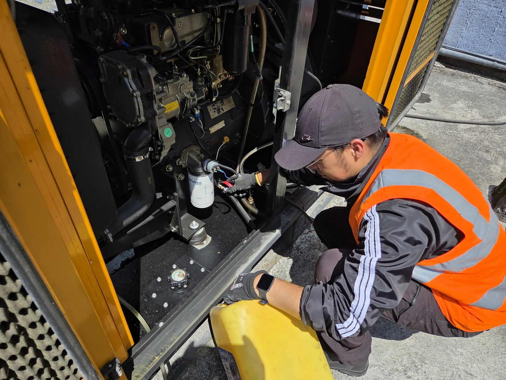
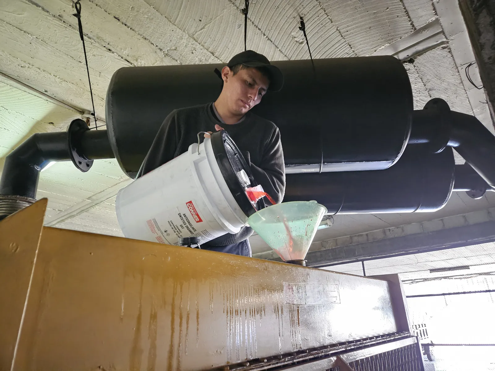

No arranca
Puede involucrar batería, circuito de arranque, combustible, protecciones o control.
Servicio técnico en Quito
Diagnóstico y atención técnica de generadores eléctricos y plantas eléctricas para conservar sus sistemas de arranque, control, combustible, refrigeración y transferencia en condiciones verificables.
Visita técnica GRATIS en Quito y valles. Informe de semaforización en 24 horas para sustentar el gasto ante su directiva. Factura y 6 meses de garantía.
Puede enviar fotografías del panel, las alarmas visibles y una descripción de la falla.

Una alarma o un comportamiento irregular debe evaluarse antes de intervenir el equipo. Evite puentear protecciones o manipular circuitos energizados.
Se va la luz en el edificio y el generador no arranca: eso es justo lo que no puede pasar. Un equipo de respaldo que falla el día que se lo necesita deja sin ascensores, sin bombas de agua y sin seguridad a todo el inmueble. Estas son las señales con las que más nos llaman en Quito:
Puede involucrar batería, circuito de arranque, combustible, protecciones o control.
Requiere revisar alarmas, alimentación de combustible y condiciones de protección.
Se evalúan batería, conexiones, cargador y sistema de carga.
Una carga incorrecta puede impedir el arranque automático cuando se necesita respaldo.
Debe detenerse la operación y verificarse la causa de forma técnica.
Se revisan refrigeración, ventilación, radiador, nivel y condición del refrigerante.
La variación puede relacionarse con velocidad, regulación, carga o control.
Se comprueban mediciones, conexiones, regulación y comportamiento del equipo.
Descebado, aire, obstrucciones o contaminación pueden afectar el encendido.
Se identifica el fluido y el punto de origen antes de definir la corrección.
Se revisan señales, mando, protecciones y secuencia del tablero de transferencia.
Fotografías propias de revisiones y mantenimientos técnicos. Las imágenes muestran actividades reales sin identificar clientes ni ubicaciones sensibles.





El alcance se determina según la condición observada, el sistema instalado y la información disponible.
Inspección programada de sistemas mecánicos, eléctricos y de control para identificar deterioro y necesidades de servicio.
Atención de fallas confirmadas y reparación o sustitución de componentes según diagnóstico y alcance acordado.
Lectura de alarmas, inspección, mediciones y pruebas orientadas a localizar la causa probable de la falla.
Revisión y cambio de filtros, aceite y refrigerante cuando correspondan al alcance y especificaciones del equipo.
Comprobación de batería, terminales, cableado, cargador y condiciones de arranque.
Inspección de alimentación, fugas, mangueras, filtros, radiador y circulación de refrigerante.
Revisión de señales, parámetros visibles, protecciones y panel de control.
Diagnóstico de mando y secuencia entre la red normal y la fuente de respaldo.
Pruebas con y sin carga cuando sean técnicamente aplicables y existan condiciones seguras para realizarlas.
La inspección se adapta al tipo de equipo y a la falla reportada.
Una secuencia clara permite definir el alcance sin adelantar conclusiones.
Servicio para sistemas de respaldo instalados en:
Atendemos solicitudes en Quito y sectores de los valles, según coordinación y alcance técnico.
La frecuencia depende de las indicaciones del fabricante, horas de operación, ambiente, combustible, historial y criticidad del respaldo. Una revisión permite proponer un plan acorde al equipo.
No puentee protecciones ni manipule circuitos. Registre la alarma visible y solicite revisión de batería, arranque, combustible, control y condiciones de seguridad.
Puede existir una protección activa, falla de combustible, lectura de sensor u otra condición. La alarma y las mediciones orientan el diagnóstico.
No necesariamente. Se deben comprobar su condición, conexiones, cargador y sistema de carga antes de definir la acción.
Indica una condición que requiere detener y evaluar el equipo. No debe anularse la protección ni continuar operando sin diagnóstico.
Sí. Se puede revisar la secuencia, señales, mando, protecciones y coordinación con el generador dentro del alcance acordado.
Se realizan cuando son técnicamente aplicables, están dentro del alcance y existen condiciones seguras de la instalación. No se afirma el uso de equipos de prueba específicos sin evaluación previa.
Fotografías generales, imagen del panel y alarmas, descripción del comportamiento, ubicación aproximada e historial reciente de mantenimiento.
Sí, se reciben solicitudes de edificios, conjuntos, comercios, empresas e instituciones en Quito y sectores de los valles, sujetas a coordinación.
Un mantenimiento de generador se aprueba en directiva o en asamblea. Estos son los respaldos con los que se sustenta.
Un generador de respaldo no se revisa cuando falla: se revisa para que no falle. El plan anual ordena esas revisiones y deja constancia escrita de cada una.
Cuando el respaldo forma parte de una instalación más amplia, también puede requerirse revisión de sistemas asociados.
Antes de aprobar un gasto ante una directiva o una asamblea conviene saber a quién se contrata. Estos son nuestros respaldos.
Atendemos exclusivamente en las instalaciones del cliente: vamos al edificio, al conjunto o al local. Es nuestro modelo de trabajo.
Cuéntenos qué ocurre y envíe fotografías del equipo y del panel para orientar la solicitud de revisión técnica en Quito.